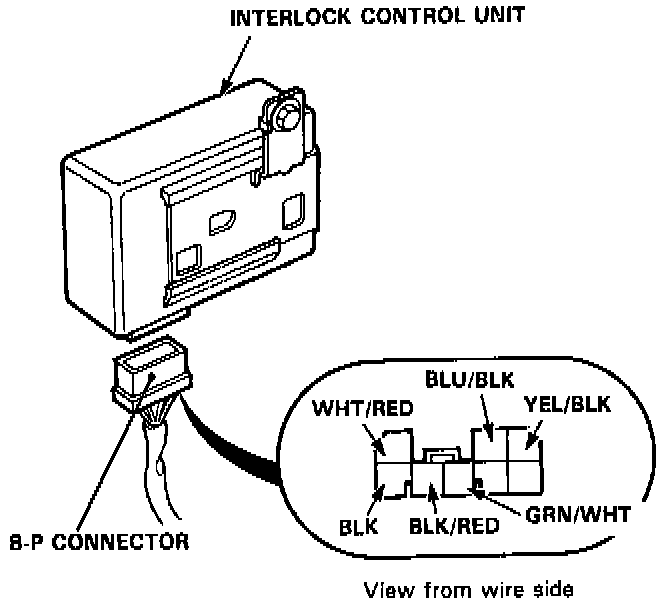
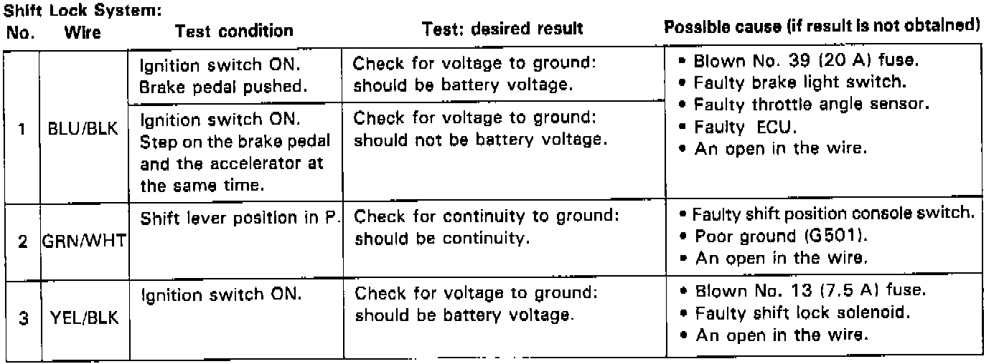
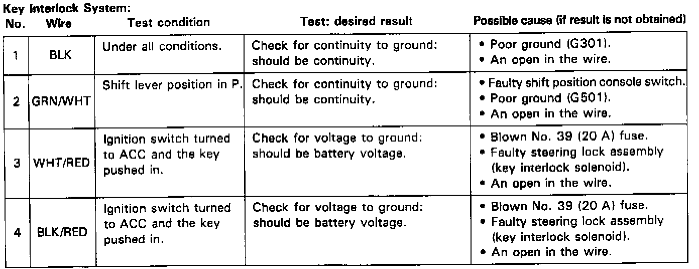

Shift Interlock Control Module: Testing and Inspection
CONTROL UNIT INPUT TEST
Disconnect the 8-P connector from the control unit.
Make the following input tests at the harness pins. If all tests prove OK, yet the system still fails to work, substitute the control unit with a known-good one. If the system is then OK, replace the control unit.


NOTE: If the shift lock solenoid clicks when the ignition switch is ON and the brake pedal is pushed (the shift lever is in the P position), the shift lock system is electronically normal.